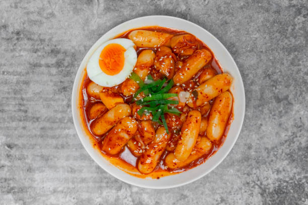

Tteokboki

Description
Tteokboki or spicy rice cakes are a dish from
South Korea. It is a well known street food and
is can be eaten with a lot of fried things.
Ingredients
- Cylinder shaped rice cake
- Water
- Large size dried anchovies
- Dried kelp
- Gochujang
- Gochugaru
- Sugar
- Scallions
- Hard boiled eggs
- Fish cakes
Steps
- Add water, dried anchovies, and dried kelp to shallow pot
- Boil for 15 minutes over med high heat w/o lid
- Add gochujang,gochugaru, and sugar into a small bowl.
Then add green onions, fish cake and hard boiled eggs
into the bowl
- Remove anchovies from pot and add rice cake and slowly
add the mixture into the pot
- Stir gently with wooden spoon when it starts to boil.
Simmer and keep stirring until the rice cake turns soft
and the sauce thickens and looks shiny